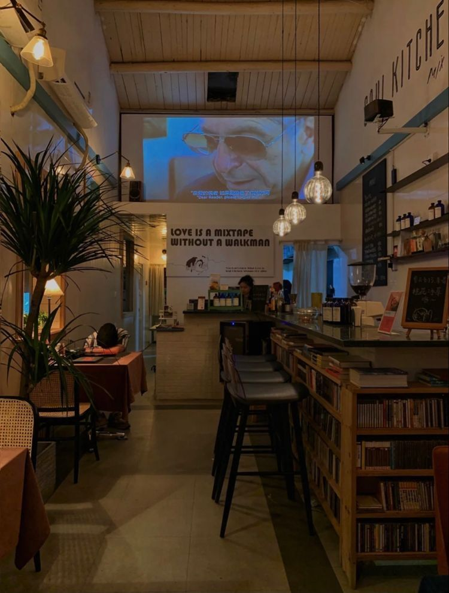

Cerita Kami
Awal yang Sederhana 2022
Semuanya bermula dari sebuah kedai kecil di sudut kota, dengan hanya satu mesin espresso dan mimpi besar. Kami membuka kafe ini bukan semata untuk menjual kopi, tapi untuk menghadirkan tempat hangat di mana orang bisa berhenti sejenak dari kesibukan. Kami meracik kopi dengan sepenuh hati, menggunakan biji kopi lokal dari petani di Jawa dan Sumatra. Setiap cangkir kami tuangkan dengan niat sederhana — membuat orang tersenyum dan merasa dihargai. Meski kecil, kedai ini menjadi rumah bagi banyak cerita. Dari pelanggan pertama yang datang setiap pagi, hingga komunitas kecil pecinta kopi yang tumbuh tanpa kami sadari. Di tahun pertama ini, kami belajar arti sesungguhnya dari “kopi yang menyatukan.”
Tumbuh Bersama Komunitas 2023
Kabar tentang cita rasa kopi kami menyebar dari mulut ke mulut. Kami mulai berkolaborasi dengan petani dari berbagai daerah — Toraja, Gayo, dan Kintamani — untuk memastikan kualitas dan keberlanjutan dalam setiap biji yang kami sangrai. Kami memperkenalkan signature blend pertama kami, dan membuka cabang kedua dengan konsep slow bar, di mana setiap pelanggan bisa menyaksikan langsung proses penyeduhan. Tahun ini menjadi titik balik: kami sadar bahwa pertumbuhan bukan hanya tentang jumlah cabang, tapi tentang hubungan yang kami bangun dengan pelanggan, petani, dan barista yang menjadi bagian keluarga kami. Kami juga mulai memperhatikan dampak lingkungan, menggunakan kemasan ramah alam, dan mengelola limbah kopi menjadi pupuk organik.
Menjadi Brand Kopi Nasional 2024
Dengan dukungan komunitas yang setia, kami melangkah lebih jauh. Kami meluncurkan lini produk roasted beans dan ready-to-drink coffee yang bisa dinikmati di seluruh Indonesia. Nama kami mulai dikenal bukan hanya sebagai kafe, tapi sebagai simbol kopi lokal yang berkarakter dan berjiwa Indonesia. Kami hadir di berbagai kota besar dengan semangat yang sama seperti hari pertama: kopi yang tulus, diseduh dengan hati. Kini, kami bukan sekadar coffee shop — kami adalah pergerakan kecil yang terus berjuang agar kopi Indonesia dikenal dunia.
“Kami tidak hanya menyajikan kopi, kami menyeduh rasa, cerita, dan kebersamaan.”
[Paragraf 3 – Perjalanan dan visi ke depan]
“Kopi yang baik adalah kopi yang dinikmati bersama cerita.”